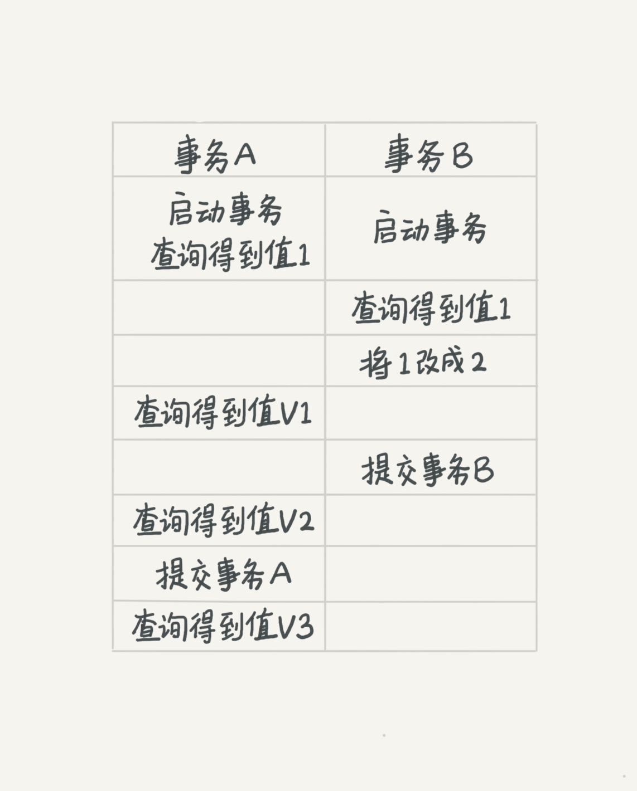
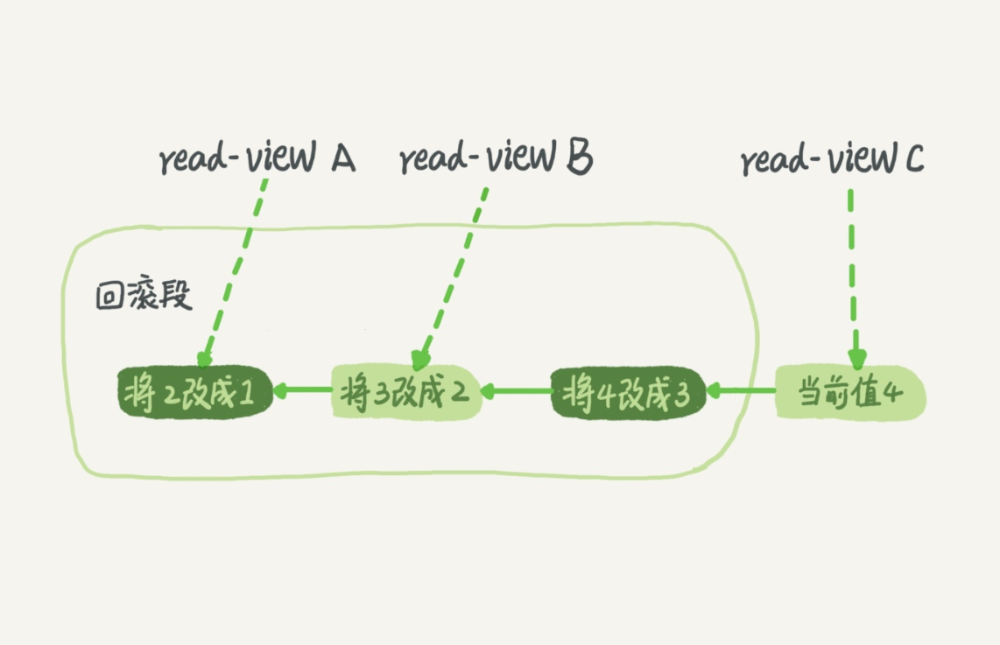

来自MySQL实战45讲
隔离性与隔离级别
提到事务，你肯定会想到ACID：
- 原子性（Atomicity）
- 一致性（Consistency）
- 隔离性（Isolation）
- 持久性（Durability）
今天我们就来说说其中I，也就是“隔离性”。
当数据库上有多个事务同时执行的时候，就可能出现：
- 脏读（dirty read）
- 不可重复读（non-repeatable read）
- 幻读（phantom read）
等的问题，为了解决这些问题，就有了“隔离级别”的概念。
脏读
所谓脏读是指一个事务中访问到了另外一个事务未提交的数据
| 事务 1 | 事务 2 |
|---|---|
| begin | begin |
| update table set age = 10 where id = 1; | |
| select age from table where id = 1; | |
| commit | rollback |
如果 会话2 更新 age 为 10，但是在 commit 之前，会话1 希望得到 age，那么会话1 获得的值就是更新前的值。或者如果会话2 更新了值但是执行了 rollback，而会话 1 拿到的仍是 10。这就是脏读。
幻读
一个事务读取2次，得到的记录条数不一致：
| 事务1 | 事务2 |
|---|---|
| begin | begin |
| select age from table where id > 2; | |
| insert into table(id, age) values(5, 10); | |
| commit | |
| select age from table where id > 2; | |
| commit |
上图很明显的表示了这个情况，由于在会话 1 之间插入了一个新的值，所以得到的两次数据就不一样了。
不可重复读
一个事务读取同一条记录2次，得到的结果不一致：
| 事务1 | 事务2 |
|---|---|
| begin | begin |
| select age from table where id = 1 | |
| update table set age = 10 where id = 1; | |
| commit | |
| select age from table where id = 1; | |
| commit |
由于在读取中间变更了数据，所以会话 1 事务查询期间的得到的结果就不一样了。
解决方案也就是下文提到的四种隔离级别，他们可以最大程度避免以上三种情况的发生。
在谈隔离级别之前，你首先要知道，你隔离得越严实，效率就会越低。因此很多时候，我们都要在二者之间寻找一个平衡点。
SQL标准的事务隔离级别包括：
- 读未提交（read uncommitted）是指，一个事务还没提交时，它做的变更就能被别的事务看到。
- 读提交（read committed）是指，一个事务提交之后，它做的变更才会被其他事务看到。Oracle数据库默认级别。
- 可重复读（repeatable read）是指，一个事务执行过程中看到的数据，总是跟这个事务在启动时看到的数据是一致的。当然在可重复读隔离级别下，未提交变更对其他事务也是不可见的。MySQL数据库默认级别。
- 串行化（serializable）是指，顾名思义是对于同一行记录，“写”会加“写锁”，“读”会加“读锁”。当出现读写锁冲突的时候，后访问的事务必须等前一个事务执行完成，才能继续执行。
| 隔离级别 | 脏读 | 不可重复读 | 幻读 |
|---|---|---|---|
| 读未提交(Read uncommitted) | ✓ | ✓ | ✓ |
| 读已提交(Read committed) | × | ✓ | ✓ |
| 可重复读(Repeatable read) | × | × | ✓ |
| 串行化(Serializable) | × | × | × |
案例
用一个例子说明这几种隔离级别。假设数据表T中只有一列，其中一行的值为1，下面是按照时间顺序执行两个事务的行为。
mysql> create table T(c int) engine=InnoDB;
mysql> insert into T(c) values(1);

我们来看看在不同的隔离级别下，事务A会有哪些不同的返回结果，也就是图里面V1、V2、V3的返回值分别是什么。
- 读未提交: 若隔离级别是“读未提交”， 则V1的值就是2。这时候事务B虽然还没有提交，但是结果已经被A看到了。因此，V2、V3也都是2。
- 读提交: 若隔离级别是“读提交”，则V1是1，V2的值是2。事务B的更新在提交后才能被A看到。所以， V3的值也是2。
- 可重复读: 若隔离级别是“可重复读”，则V1、V2是1，V3是2。之所以V2还是1，遵循的就是这个要求：事务在执行期间看到的数据前后必须是一致的。
- 串行化: 若隔离级别是“串行化”，则在事务B执行“将1改成2”的时候，会被锁住。直到事务A提交后，事务B才可以继续执行。所以从A的角度看， V1、V2值是1，V3的值是2。
事务隔离的实现
在实现上，数据库里面会创建一个视图，访问的时候以视图的逻辑结果为准。
- 在“可重复读”隔离级别下，这个视图是在事务启动时创建的，整个事务存在期间都用这个视图。
- 在“读提交”隔离级别下，这个视图是在每个SQL语句开始执行的时候创建的。
- 这里需要注意的是，“读未提交”隔离级别下直接返回记录上的最新值，没有视图概念；
- 而“串行化”隔离级别下直接用加锁的方式来避免并行访问。
我们可以看到在不同的隔离级别下，数据库行为是有所不同的。Oracle数据库的默认隔离级别其实就是“读提交”，因此对于一些从Oracle迁移到MySQL的应用，为保证数据库隔离级别的一致，你一定要记得将MySQL的隔离级别设置为“读提交”。
配置的方式是，将启动参数transaction-isolation的值设置成READ-COMMITTED。你可以用show variables来查看当前的值。
MySQL root@(none):(none)> show variables like 'transaction_isolation';
+-----------------------+-----------------+
| Variable_name | Value |
+-----------------------+-----------------+
| transaction_isolation | REPEATABLE-READ |
+-----------------------+-----------------+
可重复读
在MySQL中，实际上每条记录在更新的时候都会同时记录一条回滚操作。记录上的最新值，通过回滚操作，都可以得到前一个状态的值。
假设一个值从1被按顺序改成了2、3、4，在回滚日志里面就会有类似下面的记录。

当前值是4，但是在查询这条记录的时候，不同时刻启动的事务会有不同的read-view。如图中看到的，在视图A、B、C里面，这一个记录的值分别是1、2、4，同一条记录在系统中可以存在多个版本，就是数据库的多版本并发控制（MVCC）。对于read-view A，要得到1，就必须将当前值依次执行图中所有的回滚操作得到。
同时你会发现，即使现在有另外一个事务正在将4改成5，这个事务跟read-view A、B、C对应的事务是不会冲突的。
你一定会问，回滚日志总不能一直保留吧，什么时候删除呢？答案是，在不需要的时候才删除。也就是说，系统会判断，当没有事务再需要用到这些回滚日志时，回滚日志会被删除。
什么时候才不需要了呢？就是当系统里没有比这个回滚日志更早的read-view的时候。
基于上面的说明，我们来讨论一下为什么建议你尽量不要使用长事务。
长事务意味着系统里面会存在很老的事务视图。由于这些事务随时可能访问数据库里面的任何数据，所以这个事务提交之前，数据库里面它可能用到的回滚记录都必须保留，这就会导致大量占用存储空间。
在MySQL 5.5及以前的版本，回滚日志是跟数据字典一起放在ibdata文件里的，即使长事务最终提交，回滚段被清理，文件也不会变小。我见过数据只有20GB，而回滚段有200GB的库。最终只好为了清理回滚段，重建整个库。
除了对回滚段的影响，长事务还占用锁资源，也可能拖垮整个库，这个我们会在后面讲锁的时候展开。
事务的启动方式
长事务有潜在风险，应当尽量避免。MySQL的事务启动方式有以下几种：
- 显式启动事务语句， begin 或 start transaction。配套的提交语句是commit，回滚语句是rollback。
- set autocommit=0，这个命令会将这个线程的自动提交关掉。意味着如果你只执行一个select语句，这个事务就启动了，而且并不会自动提交。这个事务持续存在直到你主动执行commit 或 rollback 语句，或者断开连接。
有些客户端连接框架会默认连接成功后先执行一个set autocommit=0的命令。这就导致接下来的查询都在事务中，如果是长连接，就导致了意外的长事务。
因此，我会建议你总是使用set autocommit=1, 通过显式语句的方式来启动事务。
但是可能会出现“多一次交互”的问题。对于一个需要频繁使用事务的业务，第二种方式每个事务在开始时都不需要主动执行一次 “begin”，减少了语句的交互次数。其实可以使用commit work and chain语法。在autocommit为1的情况下，用begin显式启动的事务，如果执行commit则提交事务。如果执行 commit work and chain，则是提交事务并自动启动下一个事务，这样也省去了再次执行begin语句的开销。同时带来的好处是从程序开发的角度明确地知道每个语句是否处于事务中。
你可以在information_schema库的innodb_trx这个表中查询长事务，比如下面这个语句，用于查找持续时间超过60s的事务。
select * from information_schema.innodb_trx where TIME_TO_SEC(timediff(now(), trx_started)) > 60
本文由 Sajor
创作，采用 知识共享署名4.0 国际许可协议进行许可
本站文章除注明转载/出处外，均为本站原创或翻译，转载前请务必署名
最后编辑时间为: 2021-08-31T23:07:12+08:00